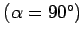
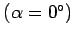

Inhalt Index DeskTop Bronstein

 Geometrie Sphärische Trigonometrie Berechnung sphärischer Dreiecke Loxodrome
Geometrie Sphärische Trigonometrie Berechnung sphärischer Dreiecke Loxodrome


Eine sphärische Kurve, die alle Meridiane unter konstantem Kurswinkel schneidet, heißt Loxodrome oder Kursgleiche. Breitenkreise  und Meridiane  sind damit spezielle Loxodromen.